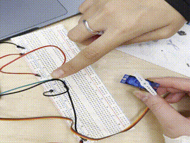
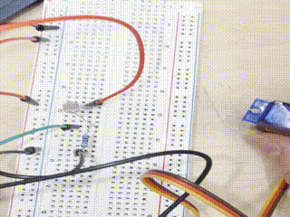
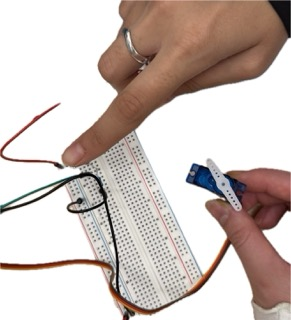
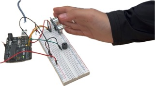
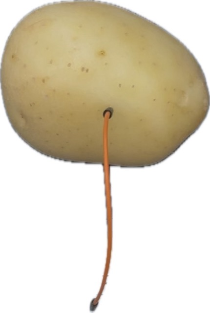

WEEK 8(classwork)
ACTIVITIES:
This week me and Archisha made a few amazing circuits.
1. Fish Playground
The micro servo spins when the sensor is covered.


experiment: spins only a little bit when a flashlight is directed to the sensor, but fully when the sensor is covered.
Component List:
- 1x Arduino
- 1x Breadboard
- 8x Wire
- 1x Resistor
- 1x Photoresistor
- 1x Micro Servo

2. Ultrasonic Music Machine
The volume increases and decreases based on how far an object is to the ultrasonic distance sensor.

Component List:
- 1x Arduino
- 1x Breadboard
- 8x Wire
- 1x Ultrasonic Distance Sensor
- 1x Piezo
3. Captive Touch Music Machine
The piezo plays different tones by touching the edges of the wires like an instrument, one is connected to a potato.
Component List:
- 1x Arduino
- 1x Breadboard
- 10x Wire
- 3x Resistor
- 1x Piezo
- 1x Potato
